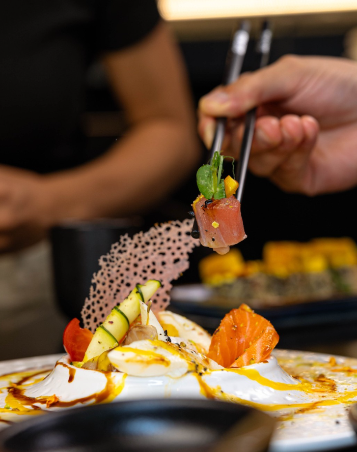
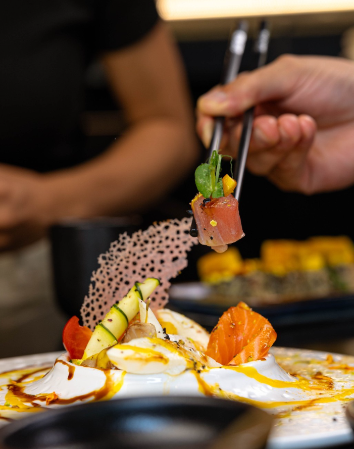

Mix Bufala
Ingredientes
- Langostinos
- Queso crema
- Palta (aguacate)
- Cebollín
- Arroz para sushi
- Alga nori
- Sésamo tostado
- Salsa de anguila (opcional)
>
Paso a Paso
- Cocina los langostinos y córtalos en tiras.
- Prepara pequeñas bolas de arroz para sushi.
- Corta tiras finas de alga nori.
- Coloca una tira de alga nori sobre cada bola de arroz.
- Añade una capa de queso crema sobre el alga nori.
- Coloca tiras de langostino, palta y cebollín en el centro.
- Enrolla cuidadosamente y corta en porciones.
- Esparce sésamo tostado por encima.
- Sirve con salsa de anguila (opcional).
 
